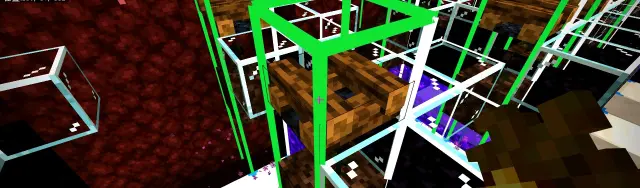
首先，我们需要知道，空气检测是什么，空气检测就是指的是进行选点的時候，生成点正上方的那个位置，必须要能够被判定为真空气类方块，才能够通过空气检测，否则失败，并且不会在该处产生尝试，表现为部分伪露天以及结构生成往下顺移
被判定为真空气类方块有两种方法，第一种是该位置的方块本身就是属于真空气类方块，第二种是该位置的方块属于被判定为真空气类方块的伪空气类方块
至于伪空气类方块如何被判定，这个可以参考一下，我们之前写的这个专栏
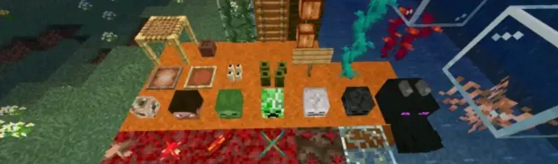
MCBE 关于伪空气类方块的评估 站内专栏 »行吧，了解了之后我们就来讲一下，在空气检测这个东西上面自然生成和结构生成的差别
首先那个第一种通过空气检测的方式，也就是生成点上方一格，直接就是真空气类方块的话，这一种对于结构生成和自然生成来说都是一样的，没有任何影响
主要会产生影响的是第二种，也就是被判定为真空气类方块的伪空气类方块这种情况
自然生成
首先，在自然生成的情况下，这个伪空气类方块将空气检测向上移的性质，这个是确定的
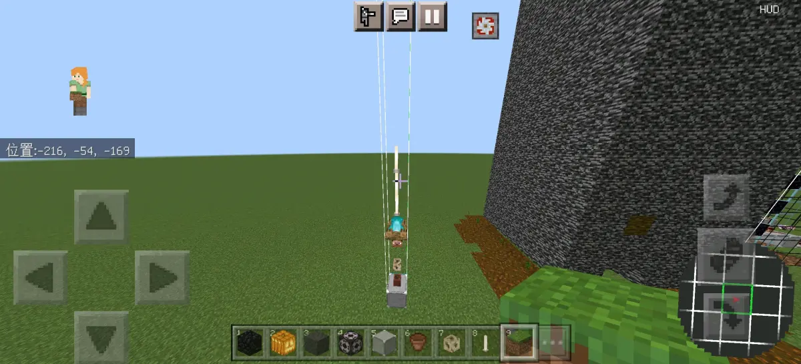
向上移动
并且这个是没有高度限制的，也就是说，你可以一路往上，就算到高度限制也行，他这个是可以一直往上，没有限制，也就是说，只要是伪空气类方块的上面是真空气类方块就可以通过，至于你中间叠加了多少层为空气类方块，是并没有要求的，问题不大
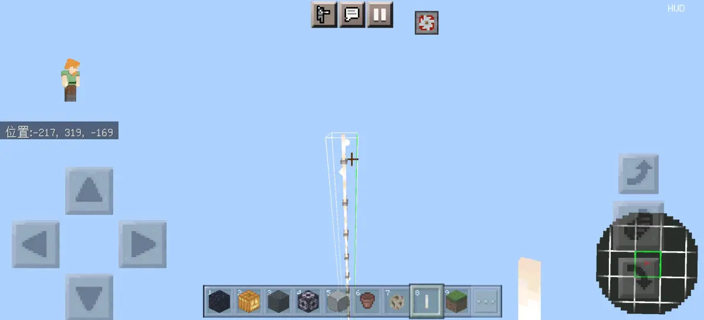
即使叠到高度限制也可以
结构生成
然后就是结构生成，我们首先要知道结构生成，它本身是有一个范围的，也就是你开tr之后看到的那一根柱子，这里拿结构方块模拟一下
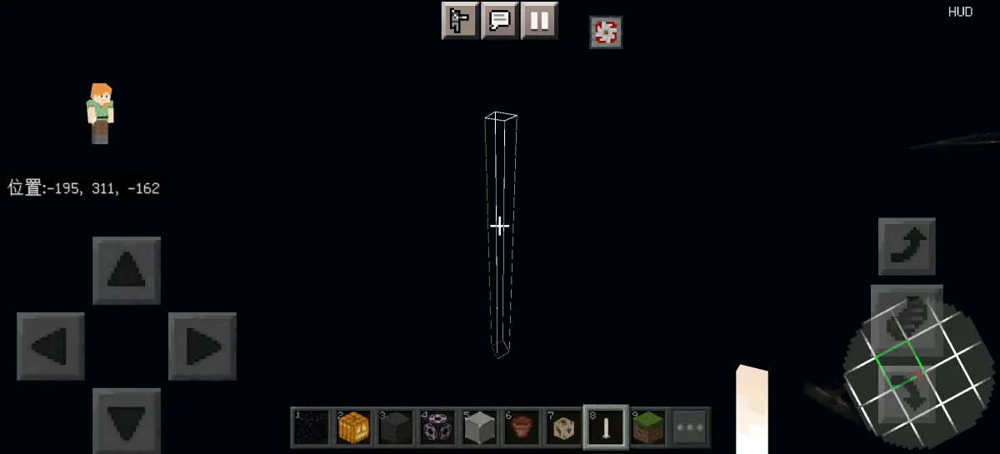
结构生成柱形范围
然而，重点就来了，那就是这个结构生成当中空气检测并不是像自然生成一样可以无限往上的，这个最多就只能往上到这个柱子的最上面那个方块，如果在这个范围内还没有做出判定的话，那么就会直接判定空气检测不通过，不产生生成尝试
这么说可能有点抽象，但是举个例子，可能就知道了，就比如这个，因为守卫者的hsa范围最高点在61格高度处，这里刚好用伪空气顶满61格，于是就判定空气检测不通过，没有生成常尝试
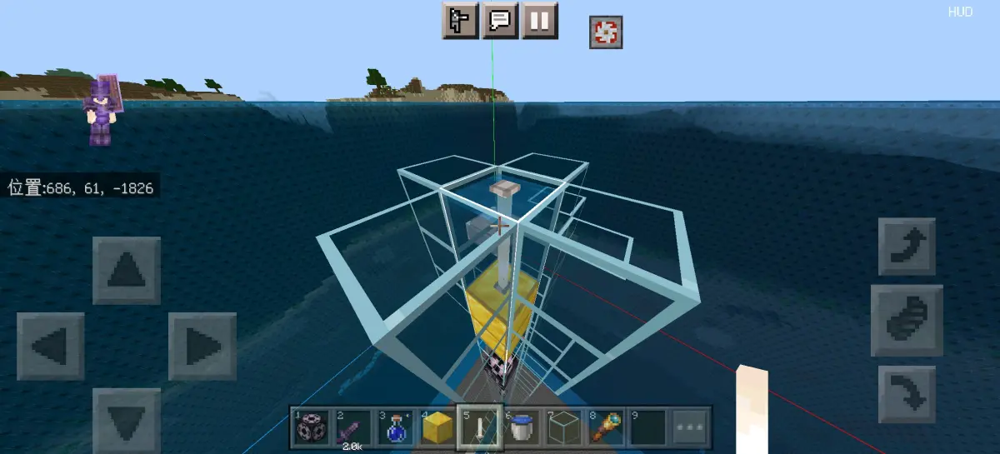
失败
这就是我们之前遇到过，但是当时没有注意，以为是守卫者的特殊判定的，这个是不是看上去非常合理，可以正常刷，但实际上不行，因为这个生成点上面的两个含水的末地烛虽然上方是空气，但是那个空气已经在那个结构生成的柱形范围外了，也就是说，在结构生成的柱形范围内，只能检测到两个含水末地烛，但这个是不会被判定为真空气类方块的，因为它的判定已经没有继续往上移了，在最上面那个含水末地烛就停下来了，因此就被判定为空气检测不通过，从而不能进行生成尝试
然后我们再来看这个
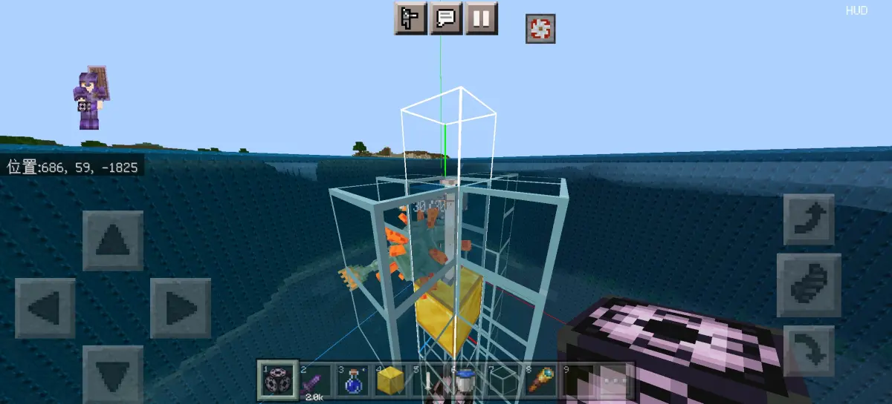
成功
这个他就在含水末地烛上方，并且还在结构生成的范围内当中的情况下留出了一个真空气类方块，使得伪空气类方块的真空气类判定可以在结构生成范围内进行结算，因此就被正常判定为真空气类方块，使空气检测通过，因此可以正常生成
并且我们也在其他几个结构生成，包括下届要塞，前哨站，女巫小屋上面进行了测试，均符合该推论，这里放一下前哨站的一个典型的截图
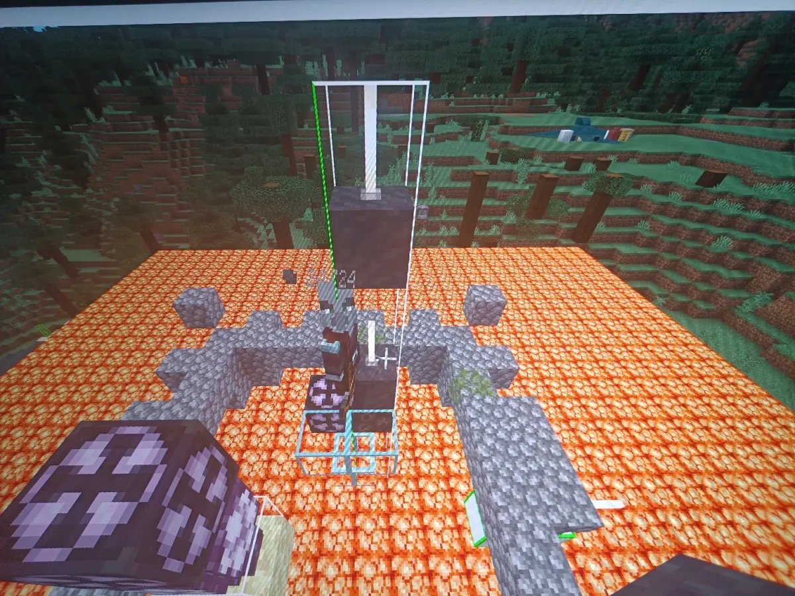
失败
这个就是上方的那个末地烛的上方虽然是空气，但是已经不在结构生成范围内，所以判定为空气检测失败，而下面的末地烛上方的空气，在结构生成范围内，因此判定空气检测成功，所以刷在下面
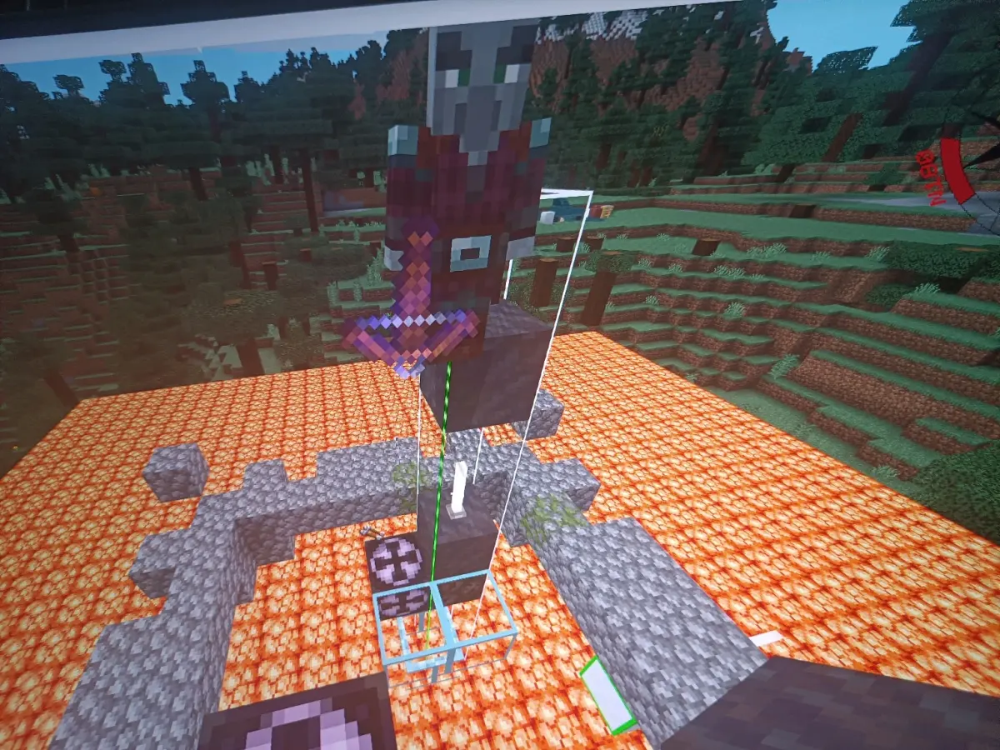
成功
而后，像这样将上方的末地烛破坏掉之后，上方直接就是空气，因此，空气检测通过，就可以刷在上面，而不会刷在下面
这么讲的话，应该都懂了吧，说白了就是一句话，自然生成的空气检测可以无线往上延伸，但是结构生成的空气检测最高只能延伸到结构生成的范围顶端位置，不会再继续往上，如果在顶端位置没有做出判定，则判定为失败，问题不大
影响
其实这个影响的话，有是有，只不过可能不是那么常见而已，最典型的就是守卫者上面，因为守卫者我们一般都是不想排太多水，所以只往下排到，刚好可以刷的那个高度，也就是刚好上面只有一格高的结构生成范围的那种
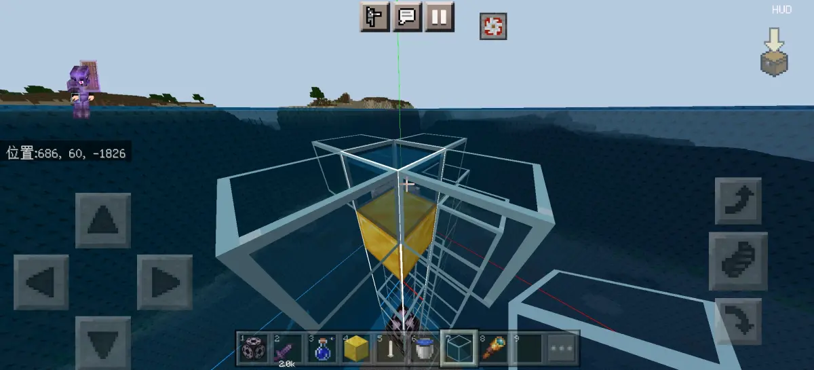
刚好能刷的位置
这种情况下，如果是做那种常规的，直接用水的，就是不是含水方块的那种，那没有任何影响，因为空气检测可以通过
但是如果一旦我们做那种需要用到含水方块的，反正我们之前就用过不少这种含水方块的设计
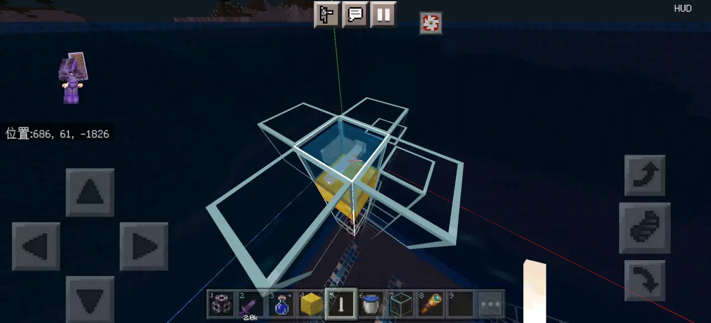
含水方块
那这样就会出事了，因为常规的含水方块除了气泡柱之外，就没有真空气类，所以基本上就空气检测通不过，然后就失败了，并且你可能还找不到问题所在，因为这放在正常的自然生成当中是完全可以正常刷的
之前在橘子群当中的時候就有人出现过这个问题，但是当时都只是当成一种现象，并没有去进行总结，至少没有将空气检测跟结构生成范围这个汇总性的联系在一起，问题不大
就跟我们之前，今天下午有一个群友在问我们，他做的我们的那个凋零骷髅农场，结果不刷的问题，我们可以看一下tr的图
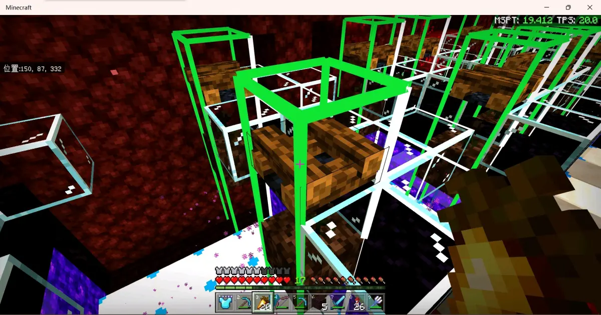
典型案例
没错，他这个就是典型的了，伪空气类方块刚好卡在最上面，然后就导致空气检测通不过，所以就导致不刷，这个可以说真的是一个很典型的案例了，解决的办法就是往下移，让伪空气类方块的真空气类判定可以在结构生成范围内完成，问题不大
所以的话，这个写这个专栏的主要原因就是，分享一下这个之前可能没什么人注意到的机制，另外也是帮助一些不太了解的人避免犯跟我们那个群友同样的错误，至少不至于说犯了这个错误之后，你还不知道哪里出了问题，总之就是希望能帮助到有需要的人吧，问题不大
行吧，最后再总结一下这个东西，自然生成的空气检测可以无限往上延伸，但是结构生成的空气检测最高只能延伸至结构生成范围顶端，如果伪空气类方块的真空气类判定延伸至结构生成范围顶端并且继续向上，则直接判定为非空气类方块，即空气检测不通过，生成尝试产生失败，问题不大
部分测试：@Cookie_531 @Town rain